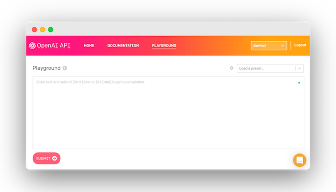

Awesome GPT-3
Awesome GPT-3 is a collection of demos and articles about the OpenAI GPT-3 API.

Demos
App and layout tools
- HTML layout generator
- Creating app design from a description
- React todo list
- React component based on description
- React component based on variable name alone
- GPT-3 generating color scales from color name or emojis
- Website generation in Figma from a description
Search and data analysis
- Question answering and search engine
- Augmenting information in tables
- Creating charts from a description
- Natural-language interface to spreadsheet by generating code
- Generating and iteratively updating graphs
- Guessing the movie/tv show by a description
- LeetCode Search: GPT-3 powered search engine for LeetCode
Program generation and analysis
- Translating natural language into shell commmands
- Reading code and responding to questions about it
- Generating Latex from description
- Generating SQL code 1
- Generating SQL code 2
- Coding interview
- Generating python
- Generating database-specific SQL code
- AI Inceptiion: GPT-3 generating machine learning code
- Most Recommended Books: GPT-3 based book recommendations
- Extracting information from documents, powered by GPT-3
Text generation
- Translating into several languages
- Write this like an attorney
- Automatically generating Request for Admissions
- Writing full emails from key points
- Simplifying legal language
- Iteratively drafted non-literal poetry translation with annotations
- Rephrasing sentences to be more polite
- Summarizing famous people thoughts
- Priming GPT-3 to Speak like Any Big Five Personality
Content creation
- Content creation for marketing
- Generating memes
- Writing Google ads
- Generating presentations
- Food recipe maker
- "How to recruit board members"
- Shakespeare-style poetry generation
- Generate a quiz on any topic and evaluate students answers
- Generating history questions, with answers
- Text completion and style rewriting
General reasoning
- Physics questions
- GPT-3 doing math
- Responding medical questions
- Coping with non-sense questions
- Reasoning questions
- Working through questions in multiple steps
- Determining food ingredients and healthiness from a picture
- Psychology: neurotypical -> autistic translation
Game generation
Other
- GPT-3 playing chess
- Designing an IVR flow using natural language
- Patient diagnosis from clinical vignettes
Articles
- Can GPT-3 Build a GPT-3 App?
- How GPT-3 works
- GPT-3 and A Typology of Hype
- GPT-3: A Hitchhiker's Guide
- [Video] Paper explanation
- Tempering Expectations for GPT-3 and OpenAI’s API
- OpenAI's GPT-3 Language Model: A Technical Overview
- GPT-3: An AI that’s eerily good at writing almost anything
- GPT-3 Creative Fiction by Gwern
- Giving GPT-3 a Turing Test
- OpenAI's GPT-3 may be the biggest thing since bitcoin
- To what extent is GPT-3 capable of reasoning?
- Longevity, and resets.
Github
- GPT-3 Sandbox: Turn ideas into demos in a matter of minutes
- gpt-3-experiments by @minimaxir
- ChatGPT-wrapper: Use it in python and shell
Products
- Tailwind CSS code generator
- OthersideAI: Automatically write emails in your personal style by simply writing the key points you want to get across
- Debuild: Describe what your web app should do in plain English, then start using it within seconds.
- AI Dungeon: An AI generated text adventure that uses deep learning to create each adventure
- WWO A/B testing OpenAI's GPT-3
- Presentations.ai Visually stunning presentations that you can design instantly
- Prompts AI: Advanced GPT-3 playground
- AirPaper: Automated document extraction powered by GPT-3